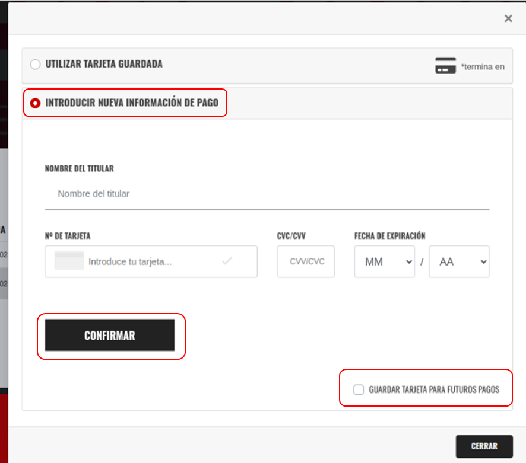
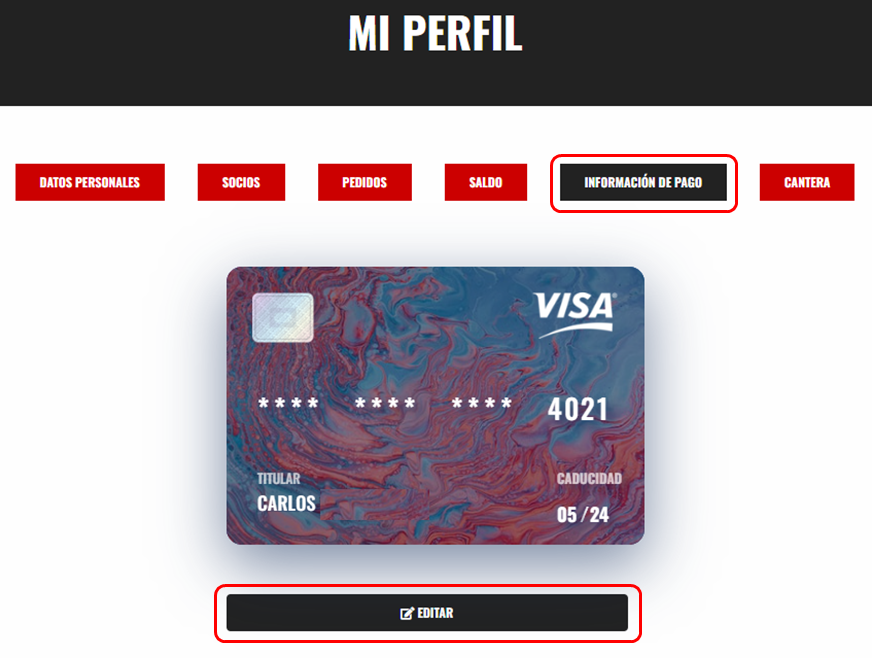
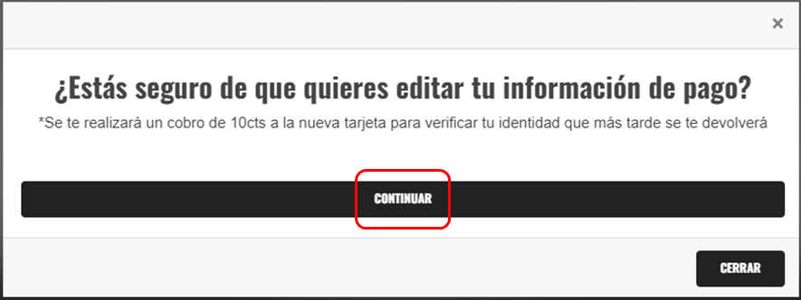
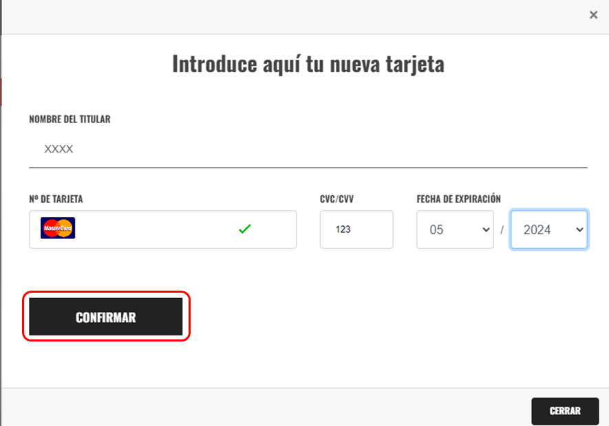
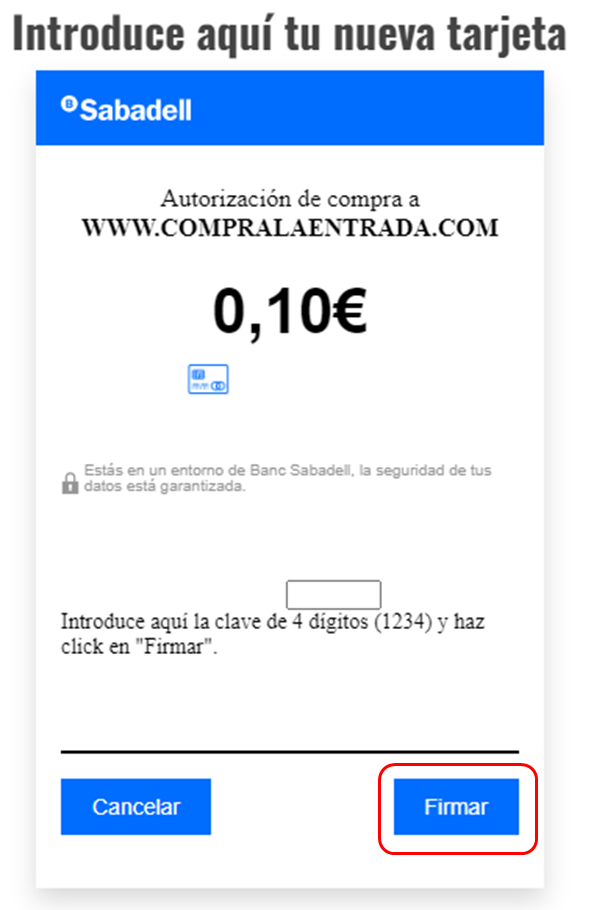
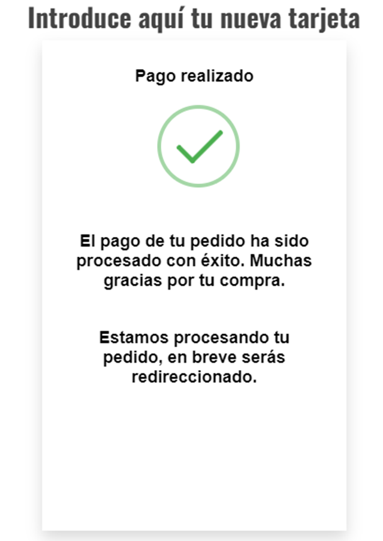

CAMBIAR TARJETA DE PAGO
En primer lugar deberá ingresar a su perfil (Si no sabe como hacerlo por favor consulte la pregunta frecuente ¿Cómo acceder a mi perfil?).
Para este caso hay dos opciones:
OPCION 1
Esta opción es válida si tiene algún plazo pendiente por pagar.
- Deberá a ingresar a su perfil y realizar el procedimiento normal para el pago de algún plazo pendiente (si no sabe como realizar el pago por favor consulte la pregunta frecuente ¿Cómo gestionar pagos pendientes?), cuando este finalizando seleccione la opción INTRODUCIR NUEVA INFORMACION DE PAGO, rellenar con la información de la nueva tarjeta, presionar en GUARDAR TARJETA PARA FUTUROS PAGOS y finalmente en CONFIRMAR.

OPCION 2
- Ingrese a su perfil. Una vez dentro del perfil presionar en la opción INFORMACION DE PAGO – EDITAR.
- En la página emergente presiona en CONTINUAR.
- En la página emergente introduce los datos de la nueva tarjeta luego presione en CONFIRMAR.
- Ingrese la clave y presione en FIRMAR. Al confirmar el pago se guardaran los cambios.


IMPORTANTE: Para realizar el cambio de tarjeta se debe realizar un pago seguro para que confirmar identidad y quede guardado, por lo tanto, se hará el cobro de 10CTS de los cuales se realizara una DEVOLUCION AUTOMATICA.


